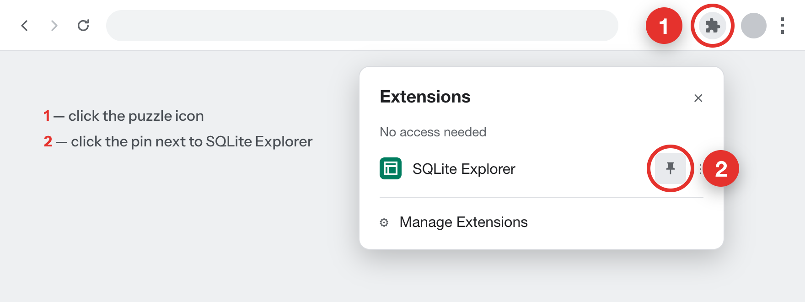
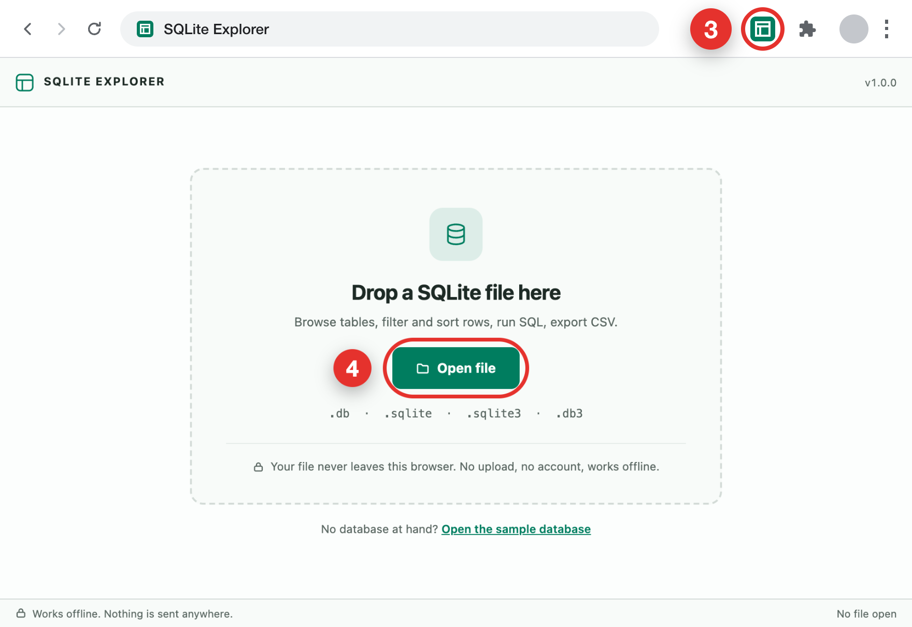

Chrome hides new extensions behind the puzzle icon — pin it first, it takes two clicks.

SQLite Explorer opens in a new tab. Drop a .db, .sqlite, .sqlite3 or .db3 file onto it, or click
Open file. No database at hand? The first screen has a sample one.
Tip: Alt+Shift+D opens SQLite Explorer from the keyboard (Option+Shift+D on a Mac).
